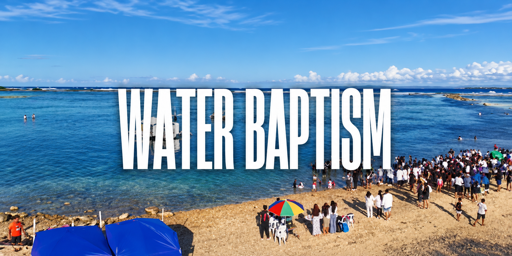

01STORY / SOUND / RHYTHM

Video editing
YouTube videos, event highlights, and story-driven edits shaped for clarity, pace, and a strong finish.
Let’s shape your storyA selection of published videos and short-form edits. Open a project to watch the finished piece.
Life Regeneration Church · Video editing

FACEBOOK REELVideo editing · Watch on Facebook
 YOUTUBE EDIT
YOUTUBE EDIT
Life Regeneration Church · Video editing
 YOUTUBE EDIT
YOUTUBE EDIT
Life Regeneration Church · Video editing
Drag to explore the edits. Pick a reel, then open the original on Facebook.
Video is the focus. The visuals and social media work around it make the message feel consistent wherever people find it.
YouTube videos, event highlights, and story-driven edits shaped for clarity, pace, and a strong finish.
Let’s shape your storyReels and vertical edits that bring the strongest moment forward and keep the story moving on a small screen.
Make your next reelVisual assets and hands-on social media support to help content look cohesive across posts and platforms.
Bring your brand togetherI start with the message, find the moments that matter, and shape the pacing, sound, and visuals around the audience.
The audience, purpose, platform, footage, and what the finished piece needs to do.
Choose the story, sequence the strongest moments, and establish the right pace.
Bring picture, sound, text, and graphics together into a cohesive cut.
Review the details, make revisions, and deliver for the intended platform.
I’m Grethiel, a video editor and social media creative based in Cebu, Philippines. I turn footage and ideas into stories that feel clear, intentional, and worth watching.
I work where storytelling, rhythm, and visuals meet.
That means looking beyond the cut. I think about the message, the audience, and the feeling a video should leave behind.
From longer videos to short-form reels, I shape the pacing, sound, and visual details around what the story needs.
Every edit should have a reason.
Every story should make it matter.
VIDEO & STORYTELLINGLong-form edits, highlights, and reels
SOCIAL & VISUALSContent, graphics, and creative details
PHILIPPINES → WORLDWIDEBased in Cebu · Available for projects
From the first frame to the final cut, the details make the difference. Explore a few published edits and see the storytelling, rhythm, and visuals come together.
YesGen Pro Leaders’ Camp — Highlights
Water Baptism
Mark of a Strong Committed Disciple
Stay in Favor of God
0104
Browse the edits. Open the one that catches your eye.
Published pieces you can explore in this portfolio.
Highlights and longer stories, ready to watch.
Short-form stories made for the scroll.